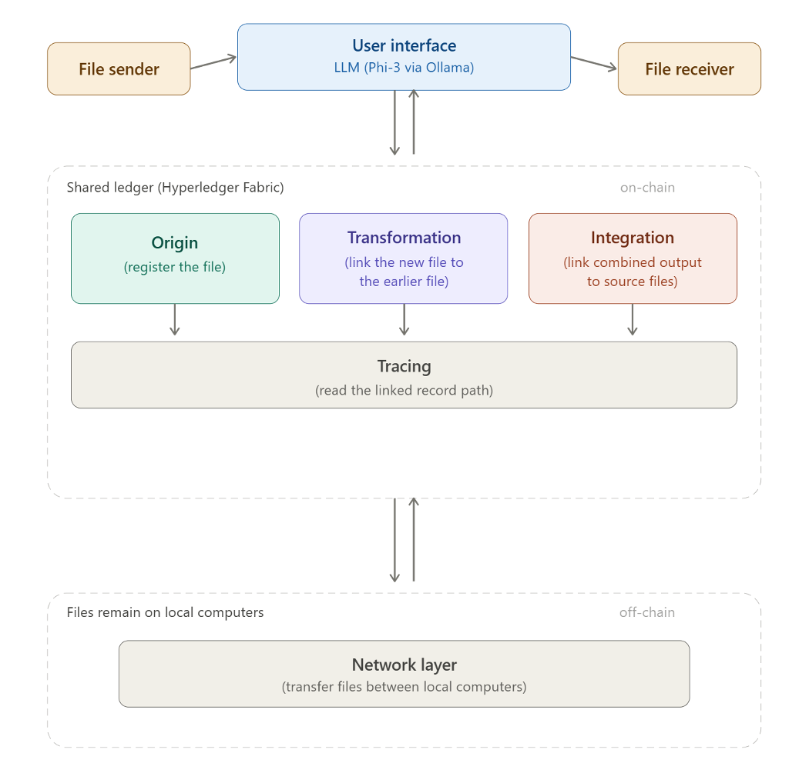

DEMETER · Ph.D. research, University of Florida · Aug 2022 – Aug 2026
BRIEFING
When agricultural data files move between organizations, the receiving party cannot check whether a file still matches what its source recorded. Healthcare and finance solved this under regulatory mandates. Agriculture has no such mandate, so a solution has to work when participation is voluntary.
ACTIONS
Designed and built DEMETER, a platform where each organization records a file’s identity and handoffs on a shared ledger under its own credentials, with no central operator. Files stay on each organization’s own systems.
Built the core in Go on Hyperledger Fabric with a REST API, and ran the multi-organization network on Docker with CI-driven build and test.
Added an LLM assistant for plain-language queries behind a write-confirmation gate: it reads freely but cannot change ledger state without explicit approval.

The ledger holds origin, transformation, and integration records; the files themselves stay off-chain.
LOOT
Verified on soil-carbon data: catches altered files, blocks records that cite unregistered sources, and tells apart two records that share a sample ID but hold different data.
Research output: a cross-sectoral review in Precision Agriculture (2026) and three infrastructure papers under review.
Code stays private until the papers are published.
MISSION · ONGOING
Serve the Fogbound Dominion
System Engineer, Solomon America (Duluth, GA) · System Engineer, Hyundai AutoEver America · Sep 2026 – present
BRIEFING
The connected-car services (CCS) platform connects Hyundai, Kia, and Genesis vehicles in the U.S., Canada, and Mexico to each brand’s services.
ACTIONS
Manage, develop, operate, and analyze the CCS platform across vehicle factory, carrier network, vehicle-control, and remote-command data, from ingestion to application services, on Kubernetes.
Diagnose production incidents to root cause in the platform’s Java/Spring services and implement the fixes; review the code for security weaknesses and ship hardening changes.
Build and operate carrier integrations (Verizon, Bell) that provision and bill vehicle connectivity.
Develop and operate five internal data platforms (Python/Django) and 10+ automation tools for monitoring, analyzing, correcting, and reporting CCS data across North America.
Define integration designs and scope estimates for new in-vehicle data products.
LOOT
[REDACTED BY THE DOMINION]
Ask me about it in an interview.
MISSION · CLEARED
Teach Machines to Watch the Sea
AI Engineer, Billion21 · Dec 2019 – Aug 2022
BRIEFING
Fish farms set feed amount and timing by manual observation, which is labor-intensive, inconsistent, and does not scale across species and tanks.
ACTIONS
Built computer-vision and machine-learning models in Python that read fish feeding activity from camera and sensor input to set feed amount and timing per species in an automated feeding system.
Co-invented a computer-vision method for seaweed spore selection that replaced manual microscope inspection.
Co-invented a blockchain system that records each handoff of seaweed from farm to buyer so any party can verify its path.
LOOT
Patent KR102034354B1, spore selection method (granted). Google Patents
AI Consultant, Global BioAg Linkages (Jan – Dec 2020): planned AI/ML adoption for agriculture and aquaculture companies, assessing technical feasibility and market viability for each.
MISSION · ONGOING
Chronicle the Findings
10 papers in total, including those under review
SELECTED SCROLLS
Cho, Y., Yu, Z., Ampatzidis, Y., Nam, J.-S. Facilitating a Future Agricultural Data Ecosystem: A Cross-Sectoral Review of Blockchain Application in Data Sharing. Precision Agriculture, 27, 138 (2026).
Cho, Y. et al. DEMETER: An Integrated Trust Infrastructure for Shared Agricultural Data. Under review.
Cho, Y. et al. An Enabling Infrastructure Layer for Origin Verification and Transfer Tracing of Shared Agricultural Data Files. Under review.
Cho, Y. et al. An Infrastructure Layer for Tracing Transformed Agricultural Data Back to Its Sources. Under review.
Methods for Selecting Spores from Laver Farm Devices. KR102034354B1, 2019 (granted). Google Patents
Blockchain-Based Seaweed Farming Data Management and Smart Supply Chain Tracking System. KR10-2024-0011399 (pending).
MISSION · ONGOING
Judge the Manuscripts
Peer reviewer for 7 journals · 2024 – present
Carbon Management (Taylor & Francis)
Discover Agriculture (Springer Nature)
Discover Applied Mathematics (Springer Nature)
Environment, Development and Sustainability (Springer Nature)
Humanities and Social Sciences Communications (Springer Nature)
Mitigation and Adaptation Strategies for Global Change (Springer Nature)
Sustainable Futures (Elsevier)
MISSION · DAILY
Train at the Algorithm Dojo
code_assessment · Python, Java
ACTIONS
Built a study tool for big-tech coding assessments: a local web app with a spaced-repetition daily queue, pattern flashcards, multiple-choice drills, and timed problems. Python standard library, no dependencies.
Each missed timed problem is logged by cause (misread statement, unknown pattern, slow recall, implementation bug), so practice targets the weakest skill.